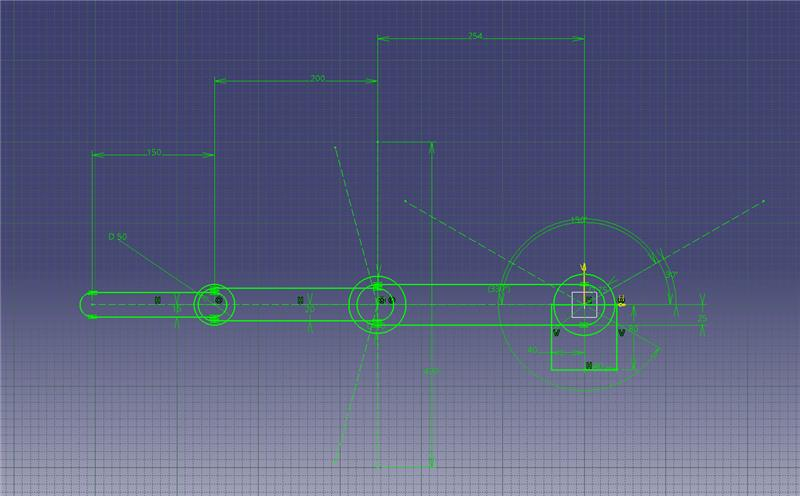
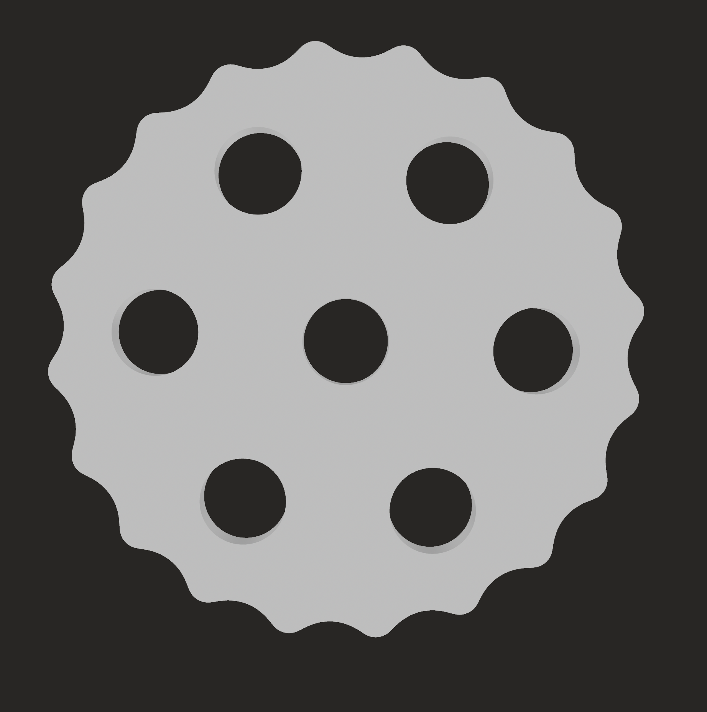

End-to-end robotic arm project currently in the mechanical design phase.
Current CAD layout reference for the in-progress 6-DOF arm architecture.
This is an end-to-end robotic arm project in progress, with the current documented work focused on mechanical design: CAD layout, joint architecture, preliminary torque calculations, drivetrain exploration, and packaging.
Future phases include electronics, controls, fabrication, testing, and AI/ML integration after the mechanical baseline is more defined.
Arm architecture
The layout is being organized around six degrees of freedom, with the base, shoulder, elbow, wrist, and end-effector relationships defined before hardware selection. This shows the current architecture direction, not a completed arm.
CAD and packaging
The CAD model is being used to work through joint envelopes, link geometry, actuator space, and service access. Packaging decisions are still being refined before fabrication-ready parts are presented.

Torque calculations
Preliminary calculations are being used to guide joint loading assumptions and drivetrain direction. They are early design inputs, not validated performance results.

Drivetrain exploration
The cycloidal disk model captures one compact reduction concept being explored for joint packaging. It is an exploratory CAD direction, not a tested or selected transmission.